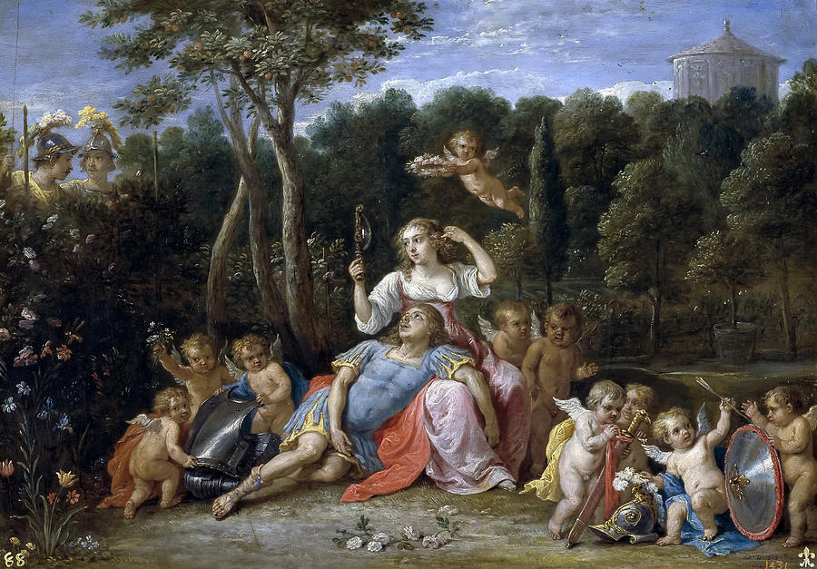

Il giardino di Armida è un luogo immaginario nel poema epico di Torquato Tasso "Gerusalemme liberata". Viene descritto come un giardino bellissimo e incantato, pieno di piante, fiori e animali esotici. Armida, una maga e principessa di Damasco, usa il giardino per attirare i cavalieri cristiani lontano dal campo di battaglia e tenerli prigionieri in uno stato di beata ignoranza. Il giardino è descritto in grande dettaglio nel Canto 16 del poema, e si dice che essere un luogo di piacere sensuale e tentazione. I cavalieri che entrano nel giardino vengono accolti da bellissime ninfe e fanciulle, che offrono loro cibo, bevande e intrattenimento. Il giardino è anche pieno di creature magiche, come uccelli parlanti e alberi che cantano. Il giardino è un simbolo dei pericoli della tentazione e del fascino del piacere. Rappresenta la tentazione che affrontano i cavalieri cristiani di abbandonare il proprio dovere e cedere ai propri desideri. Il giardino è anche un simbolo del potere dell'illusione e dell'inganno, poiché Armida usa la sua magia per creare una falsa realtà progettata per tenere prigionieri i cavalieri. Nonostante la sua bellezza e il suo fascino, il giardino è in definitiva un luogo di pericolo e corruzione. I cavalieri che entrano nel giardino non riescono a resistere al suo fascino e rimangono intrappolati in uno stato di perpetuo piacere e ignoranza. È solo grazie all'intervento dell'eroe cristiano Rinaldo che i cavalieri riescono a fuggire dal giardino e tornare sul campo di battaglia.
Nel complesso, il giardino di Armida è un simbolo potente ed evocativo in "Gerusalemme liberata", che rappresenta i pericoli della tentazione e il potere dell'illusione. Ricorda l'importanza di rimanere fedeli al proprio dovere e di resistere al fascino del piacere e della tentazione. Armida, una maga e principessa di Damasco, usa il giardino per attirare i cavalieri cristiani, come Rinaldo, lontano dal campo di battaglia e tenerli prigioniero in uno stato di beata ignoranza. Il giardino rappresenta i pericoli della tentazione e il fascino del piacere, così come il potere dell'illusione e dell'inganno. Il giardino di Armida è un elemento importante nella narrazione del Tasso poiché mette in luce le lotte interne che i cavalieri cristiani affrontano tra il loro cuore e il loro dovere. Il giardino funge anche da contrasto con la dura realtà della guerra e con l'obiettivo finale di liberare Gerusalemme, sottolineando l'importanza di rimanere fedeli alla propria missione e resistere al fascino del piacere e della tentazione.
 <-- Home